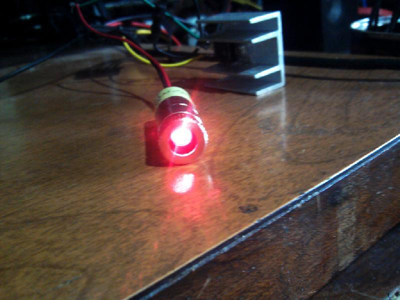

Esta obra de EnergyLabs Brasil, foi licenciada com uma Licença Creative Commons - Atribuição - Partilha nos Mesmos Termos 3.0 Não Adaptada.
Permissões adicionais ao âmbito desta licença podem estar disponíveis em http://www.energylabs.com.br.
Este é um documento rapido que fiz apenas para mostrar o esquema que uso pra ligar meus diodos laser. É na verdade um simples regulador de corrente constante usando o LM317, funciona muito bem para diodos laser e ainda permite através de uma fórmula facil, calcular o resistor para determinada corrente. Abaixo vai o esquema:
Como podem ver o esquema é bem simples, o resistor R é que define a corrente que o LM317 irá regular. Só atente-se a um detalhe, se você reparar no esquema, toda corrente flui através do resistor R, logo ele irá dissipar um calor definido pela Lei de Ohm (Qualquer duvida para calcular, visite Calculadora -> Lei de Ohm) em P = R * I² . Então fique atento por que ele precisará dissipar esse calor.
Fiz também um esquema para testar o regulador sem arriscar queimar o diodo laser. Com este esquema você simula o diodo laser para poder prever se tudo irá funcionar direito com o laser propriamente dito.
Como podem ver é constituido de 4 diodos em serie e um resistor de 1 Ohm. Caso use diodos Blu-ray, use 6 diodos 1n4007 em serie ao invés de 4.
Neste circuito você pode medir a corrente que está fluindo no simulador do diodo laser, com 1R, usando a lei de ohm, cada mV será 1mA. Ou seja, a escala será 1mA/mV.
Se o medidor marcar 100mV, quer dizer que flui 100mA no simulador.
É isso ai! Boa sorte na sua montagem. Verifique se o LM317 que você comprou tem as mesmas correspondencias de pinos que demonstrados na figura, pois já peguei modelos que eram diferente.
Fotos de lasers com este driver:
Verde:
Vermelho:

Esta obra de EnergyLabs Brasil, foi licenciada com uma Licença Creative Commons - Atribuição - Partilha nos Mesmos Termos 3.0 Não Adaptada.
Permissões adicionais ao âmbito desta licença podem estar disponíveis em http://www.energylabs.com.br.